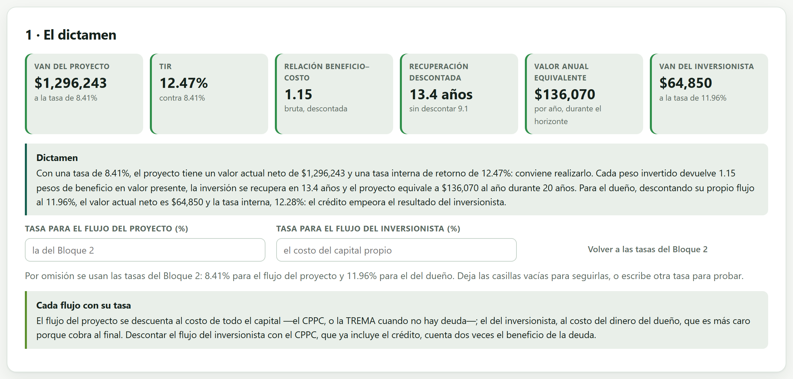
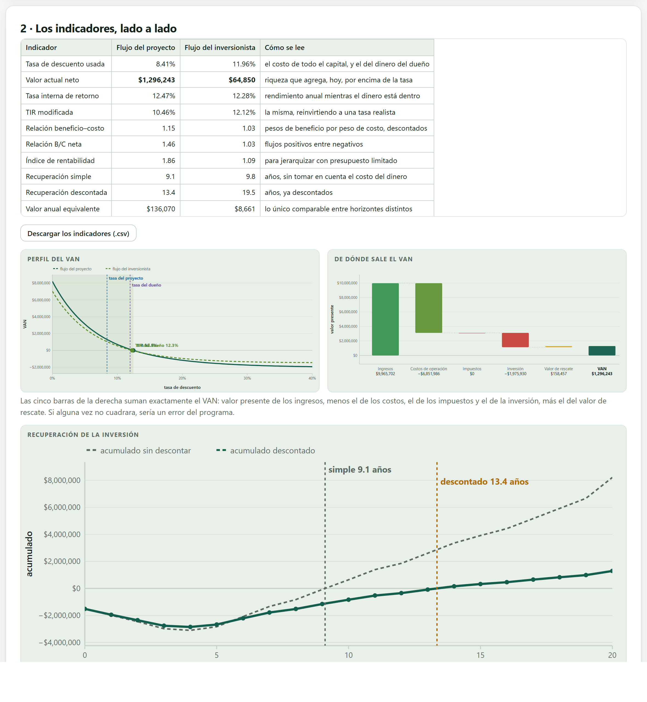
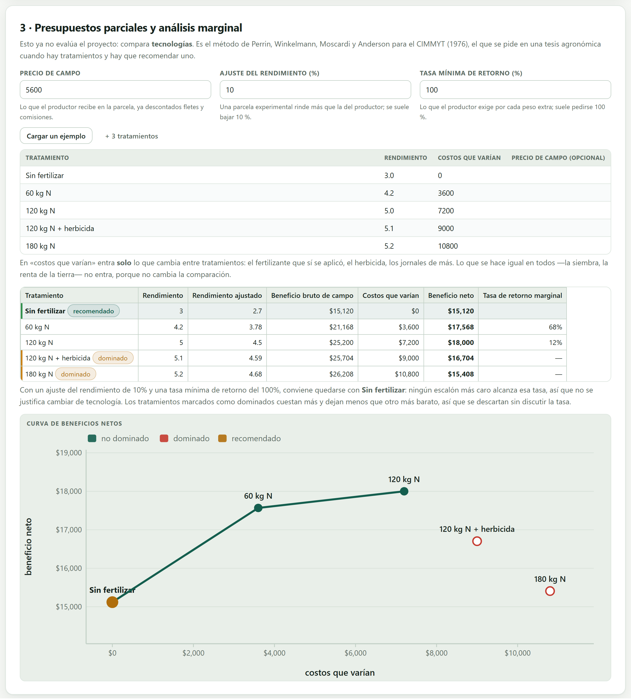

El bloque que contesta la pregunta del título del estudio. Descuenta los dos flujos —cada uno con su tasa—, entrega los siete indicadores clásicos, desarma el VAN en las piezas que lo forman, escribe un dictamen listo para copiarse y, cuando el estudio compara tecnologías, hace el análisis marginal del CIMMYT.
Aquí no se captura nada: todo lo que este bloque necesita ya está en los cuatro anteriores. Lo único que se puede tocar son las dos tasas —y solo para probar—, porque por omisión usa las del Bloque 2. Lo que hace es descontar, comparar y redactar.
Y lo que no hace es decidir. Entrega indicadores, un dictamen escrito y las advertencias del caso; la decisión, y la responsabilidad de firmarla, es de quien hace el estudio. Un VAN positivo no obliga a invertir: puede haber razones de mercado, de riesgo o de capacidad que el modelo no ve.
Los siete indicadores de este bloque salen del mismo flujo descontado. El VAN lo dice en pesos; la TIR, en porcentaje; la relación beneficio–costo, como razón; el periodo de recuperación, en años; el valor anual equivalente, en pesos por año. No son siete pruebas independientes: si el VAN es positivo, la TIR supera a la tasa y la relación beneficio–costo pasa de uno, siempre. Cuando uno dice algo distinto de otro es porque se están comparando proyectos de distinto tamaño o de distinta duración, y eso lo resuelve el Bloque 9.
La primera tarjeta pone los seis números que van en el resumen ejecutivo y, debajo, el dictamen redactado.

«Con una tasa de 8.41 %, el proyecto tiene un valor actual neto de $1,296,243 y una tasa interna de retorno de 12.47 %: conviene realizarlo. Cada peso invertido devuelve 1.15 pesos de beneficio en valor presente, la inversión se recupera en 13.4 años y el proyecto equivale a $136,070 al año durante 20 años. Para el dueño, descontando su propio flujo al 11.96 %, el valor actual neto es $64,850 y la tasa interna, 12.28 %: el crédito empeora el resultado del inversionista.»
Ese párrafo se puede copiar tal cual al capítulo de resultados. Cambia solo cuando cambian los números, y la última frase se escribe sola según el crédito ayude o estorbe.
En el cafetal, el proyecto rinde 12.47 % y el crédito cuesta 12.5 %: la deuda cuesta más de lo que el proyecto genera, así que endeudarse le quita al dueño en vez de darle. El VAN del inversionista ($64,850) queda muy por debajo del VAN del proyecto ($1,296,243) por eso y porque su tasa de descuento es más alta. Un crédito más barato o un plazo más largo cambiarían esa frase; es exactamente el tipo de prueba que vale la pena hacer antes de firmar.
La segunda tarjeta pone los dos flujos en columnas y añade una tercera que dice cómo se lee cada renglón. Es la tabla que va en el cuerpo de la tesis.

| Indicador | Proyecto | Inversionista | Cómo se lee |
|---|---|---|---|
| Tasa de descuento usada | 8.41 % | 11.96 % | El costo de todo el capital, y el del dinero del dueño |
| Valor actual neto | $1,296,243 | $64,850 | Riqueza que agrega, hoy, por encima de la tasa |
| Tasa interna de retorno | 12.47 % | 12.28 % | Rendimiento anual mientras el dinero está dentro |
| TIR modificada | 10.46 % | — | La misma, reinvirtiendo a una tasa realista |
| Relación beneficio–costo | 1.15 | 1.03 | Pesos de beneficio por peso de costo, descontados |
| Relación B/C neta | 1.46 | — | Flujos positivos entre negativos |
| Índice de rentabilidad | 1.86 | — | Para jerarquizar con presupuesto limitado (Bloque 9) |
| Recuperación simple | 9.1 años | — | Sin tomar en cuenta el costo del dinero |
| Recuperación descontada | 13.4 años | 19.5 años | Ya descontados: la buena |
| Valor anual equivalente | $136,070 | $8,661 | Lo único comparable entre horizontes distintos |
Nueve años contra trece y medio. La diferencia es el costo del dinero: la simple suma pesos de años distintos como si valieran lo mismo, y por eso siempre sale antes. En un proyecto perenne, con la inversión al principio y los beneficios lejos, esa diferencia es enorme. Reporta siempre la descontada; la simple, si acaso, como dato.
La app desarma el VAN en cinco piezas que suman exactamente el resultado. No es una aproximación: es una identidad, y la app la comprueba.
| Valor presente de los ingresos | $9,965,702 |
| Valor presente de los costos de operación | −$6,851,986 |
| Valor presente de los impuestos | $0 |
| Valor presente de la inversión (inicial y reposiciones) | −$1,975,930 |
| Valor presente del valor de rescate | +$158,457 |
| Valor actual neto | $1,296,243 |
Dos cosas saltan a la vista. El impuesto es cero, por la exención del artículo 74 que vimos en el capítulo anterior. Y el rescate aporta apenas $158,457 de los casi $797,000 nominales: un peso del año 20 descontado al 8.41 % vale 20 centavos. Es la mejor demostración de que el valor residual casi nunca salva un proyecto.
| Figura | Qué muestra y cómo se lee |
|---|---|
| Perfil del VAN | El VAN de los dos flujos a cada tasa posible. Donde cada curva corta el eje está su TIR; las líneas verticales marcan las dos tasas que usa el estudio. Cuanto más pegada esté la tasa a la TIR, más frágil es el proyecto —en el cafetal, 8.41 contra 12.47: hay cuatro puntos de margen. |
| Cascada del VAN | Las cinco piezas de la sección anterior, en barras que suben y bajan hasta el VAN. Es la figura que mejor explica un resultado en una defensa. |
| Recuperación | El acumulado del flujo, sin descontar y descontado. Donde cada línea cruza el cero está su periodo de recuperación; la distancia entre las dos es, otra vez, el costo del dinero. |
La tercera tarjeta ya no evalúa el proyecto: compara tecnologías. Es el método de Perrin, Winkelmann, Moscardi y Anderson para el CIMMYT (1976), el que se pide en una tesis agronómica cuando hay tratamientos y hay que recomendar uno.

| Campo | Por qué existe |
|---|---|
| Precio de campo | Lo que el productor recibe en la parcela, ya descontados fletes y comisiones; no el precio del mercado mayorista. |
| Ajuste del rendimiento | Una parcela experimental rinde más que la de un productor: se baja un 10 % por costumbre, y se declara. |
| Tasa mínima de retorno | Lo que el productor exige por cada peso extra que arriesga. Suele pedirse 100 %: un peso más de costo tiene que devolver dos. |
En «costos que varían» entra solo lo que cambia entre tratamientos: el fertilizante, el herbicida, los jornales de más. Lo que se hace igual en todos —la siembra, la renta de la tierra— no entra, porque no cambia la comparación.
| Tratamiento | Rendimiento | Ajustado | Costos que varían | Beneficio neto | Retorno marginal |
|---|---|---|---|---|---|
| Sin fertilizar | 3.0 | 2.70 | $0 | $15,120 | — |
| 60 kg N | 4.2 | 3.78 | $3,600 | $17,568 | 68 % |
| 120 kg N | 5.0 | 4.50 | $7,200 | $18,000 | 12 % |
| 120 kg N + herbicida | 5.1 | 4.59 | $9,000 | $16,704 | dominado |
| 180 kg N | 5.2 | 4.68 | $10,800 | $15,408 | dominado |
Con un ajuste del 10 % y una tasa mínima del 100 %, la recomendación es no fertilizar. Pasar a 60 kg de nitrógeno devuelve 68 centavos por cada peso invertido —un 68 % de retorno marginal, que en cualquier otro contexto sería excelente— pero no llega al 100 % que el productor exige por arriesgar su dinero. Y de 60 a 120 kg el retorno cae a 12 %.
Un tratamiento está dominado cuando cuesta más y deja menos que otro más barato. No hace falta calcular su tasa de retorno: nadie pagaría más por ganar menos. En el ejemplo, los 180 kg de nitrógeno cuestan $10,800 y dejan $15,408, mientras que 120 kg cuestan $7,200 y dejan $18,000. Se descartan, y la curva de beneficios netos solo une los que quedan —por eso la frontera de la figura tiene tres puntos y no cinco.
La tasa de retorno marginal entre dos tratamientos consecutivos es el aumento del beneficio neto entre el aumento del costo. Geométricamente es la pendiente de la curva: cada tramo más plano es un escalón que rinde menos.
El VAN dice si el proyecto conviene. El análisis marginal dice qué tecnología recomendarle al productor dentro de ese proyecto. Son dos secciones distintas de una tesis y se reportan por separado: el primero con el flujo de veinte años, el segundo con un solo ciclo y sin descontar, porque todo ocurre dentro del mismo año.
| Clase | Lo que revisa |
|---|---|
| Error | No hay flujos que evaluar: falta algo de los bloques anteriores. |
| Advertencia | El flujo cambia de signo más de una vez y puede haber varias tasas internas: en ese caso manda el VAN y se reporta la TIR modificada; la tasa del inversionista es menor que la del proyecto, lo que normalmente es al revés; el VAN del proyecto es positivo pero el del inversionista negativo, o al contrario. |
| Nota | Cuál de los dos flujos manda según lo que se quiera sustentar; que el valor de rescate pesa poco una vez descontado; en el análisis marginal, cuántos tratamientos quedaron dominados y con qué tasa mínima se hizo la recomendación. |
| Si el estudio es para justificar el proyecto | entonces el flujo del proyecto manda, y el del inversionista va como complemento. |
| Si el estudio es para pedir un crédito | entonces los dos: el banco mira el del proyecto para la capacidad de pago y el del dueño para su compromiso. |
| Si la TIR no existe o es múltiple | entonces reporta el VAN y la TIR modificada, y explica por qué en una nota. |
| Si hay tratamientos comparados | entonces el análisis marginal va en su propia sección, con el precio de campo y la tasa mínima declarados. |
El dictamen de este bloque es el que el informe del Bloque 10 imprime como resumen. Lo que quede aquí es lo que se publica.